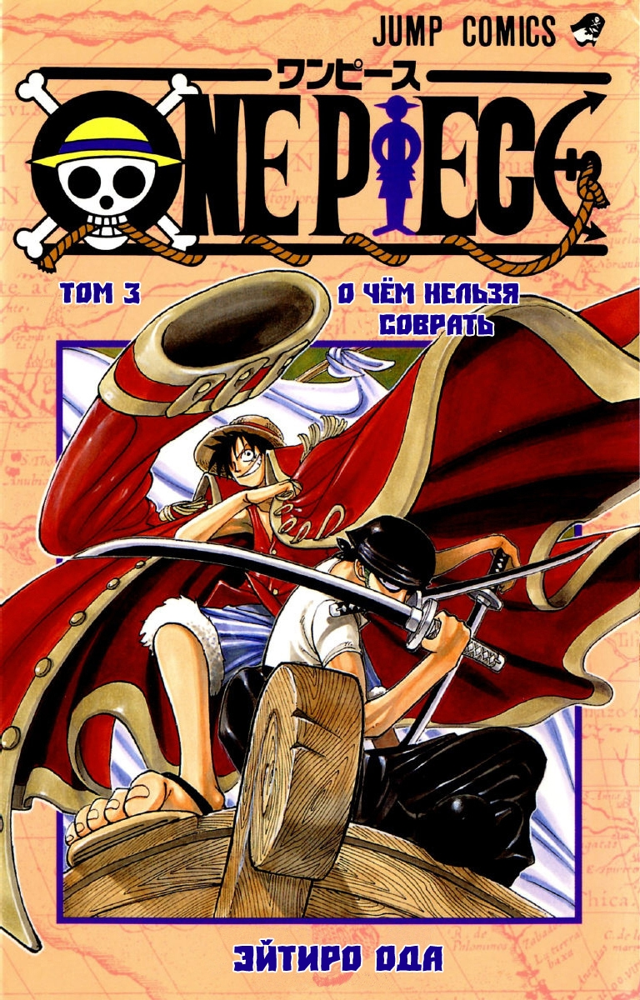
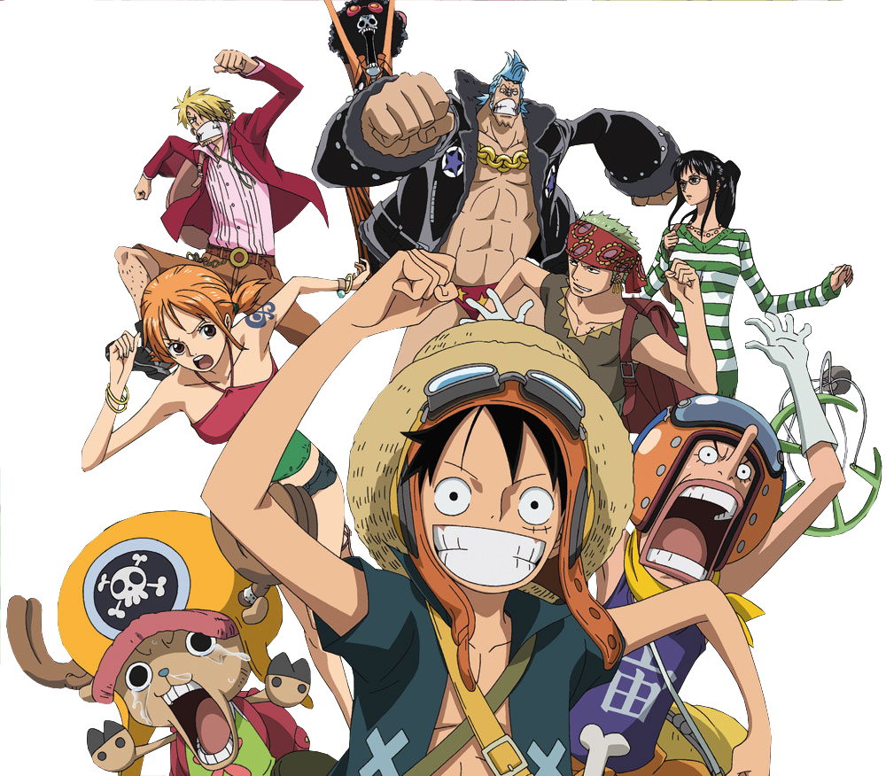

| One Piece |
|---|
|  |
| Жанр/тематика:
приключения, комедия, фентези |
| Манга |
| Автор:
Эйитиро Ода Издатель: Shueisha Пуликуется в: Weekly Shonen Jump Аудитория: Сёнэн Публикация: 19 июля 1997 года — настоящее время Томов: 94 (на 20 августа 2019) Глав: 970+ |
| OVA «One Piece: Defeat The Pirate Ganzack!» |
| Режиссер: Горо Танигути Студия: Production I.G Дата выпуска: 26 июля 1998 года Продолжительность: 29 минут |
| Аниме-cериал |
|
Режиссер: Kоносукэ Уда (1999—2006) Мунэхиса Сакай (2006—2008) Хироаки Миямото (2008 — настоящее время) Сценарист: Юнки Такэгами (1999—2006) Хирохико Уэсака (2006 — настоящее время) Длительность: 23 минуты Серий: 900+ |
One Piece (яп. ワンピース ван пи:су, «Ван-Пис»)— сёнэн манга за авторством Эйитиро Оды, выходящая с 19 июля 1997 года по настоящие время в журнале Weekly Shonen Jump.
One Piece повествует о приключениях пиратской команды под названием «Пираты Соломенной шляпы» во главе с капитаном Манки Д. Луффи, в детстве съевшим Дьявольский плод Резина-Резина, давший ему способность растягиваться и сжиматься, как резина. Вместе со своей командой Луффи ищет легендарное сокровище, известное как «Ван-Пис», чтобы стать Королём пиратов. В формате тома манга впервые увидела свет 24 декабря 1997 года. В аниме-адаптацию входят телесериал, четырнадцать полнометражных фильмов и несколько OVA. Впервые One Piece вышел на экраны в формате OVA в 1998 году, премьера первой серии аниме-сериала состоялась 20 октября 1999 года. Кроме того, под маркой One Piece выпущено около трёх десятков игр для различных игровых консолей. В России и манга, и аниме лицензированы издательством «Комикс-Арт» под названием «One Piece. Большой куш», премьера сериала в России состоялась 16 апреля 2012 года на телеканале 2x2.В 2019 году издательство Азбука-Аттикус объявило о переиздании манги в России. Манга входит в число наиболее успешных изданий компании Shueisha за всю историю. С момента своего выпуска One Piece стал самой популярной мангой в Японии и одной из наиболее популярных манг по всему миру. На момент выхода 67-го тома, первый тираж которого составил 4 050 000 экземпляров — самый большой первый тираж манги в Японии и в мире, стало известно, что суммарные продажи томов One Piece превысили 300 миллионов экземпляров. One Piece является самой продаваемой мангой в мире, значительно опередив уже завершённый «Жемчуг дракона» и самую продолжительную мангу Kochikame (выходила 40 лет — с 1976 по 2016 годы). Также продажи One Piece достигли 100 000 000 быстрее любой другой манги.
| Содержание |
|---|

Вымышленная вселенная One Piece населена как людьми, и другими разумными расами, как: скапийцы, русалки, рыболюди и великаны. В морях обитают различные крупные морские звери, именуемые властелинами морей. В этом мире существует только один континент Ред-Лайн, который опоясывает планету. Перпендикулярно Ред-Лайн идёт океаническое течение Гранд-Лайн, которое также опоясывает земной шар. Ред-Лайн и Гранд-Лайн делят мировой океан на четыре: Ист-Блу — восточный океан, Вест-Блу — западный океан, Норд-Блу — северный океан и Саут-Блу — южный океан. Гранд-Лайн находится между двумя поясами, отделяющими Гранд-Лайн от четырёх океанов, которые называются Калм-Белт. На Калм-Белте практически всегда полный штиль и полное отсутствие морских течений, а также много властелинов морей, и поэтому наиболее простой и безопасный способ попасть на Гранд-Лайн — через одно из четырёх течений на горе Реверс-Маунтин добраться до вершины горы, а потом спуститься с горы по пятому течению, ведущему прямиком на Гранд-Лайн. Гранд-Лайн отличается непредсказуемым климатом. Из-за разницы климатических зон на этом течении существует четыре основных типа островов по климатическим условиям: летние, весенние, осенние и зимние. Так как на Гранд-Лайн полно магнитных аномалий, обычный компас непригоден для навигации по этому течению. Для этого существует специальный компас лог-пос, который при пребывании в течение некоторого времени на одном из островов Гранд-Лайн настраивается на магнитное поле следующего. Вторая половина Гранд-Лайн, начинающаяся после пересечения его с Ред-Лайн, называется «Новым светом» и отличается более суровым климатом, чем первая половина. Те, кто побывал в Новом свете, окрестили первую половину Гранд-Лайн «Раем» по сравнению с ним. Технологический прогресс в этом мире схож с Европой XVII века, однако некие аналоги современных технологий в нём присутствуют. Например, функцию передатчиков выполняют улиткофоны, животные, похожие на улиток, которые при присоединении к электрическому оборудованию способны выполнять функцию телефона, факса, камеры и прочих устройств подобного рода. На небесном острове Скайпия водятся животные, раковины которых могут сохранять звук, ветер, изображения или примененную к ним механическую силу. Такие раковины используются в различных механизмах. В мире One Piece находится в обращении денежная единица под названием «белли». На Скайпии существует другая денежная единица под названием «экстолы». 1 белли равен 10 000 экстолам.
Почти весь мир One Piece контролирует Мировое правительство, которое является основным антагонистом в серии. У Мирового правительства много врагов, одним из главнейших является Революционная армия, которая борется против него и уже совершила перевороты в нескольких государствах. Океаны контролируются тремя основными силами: Морским дозором, семью Великими Корсарами и четырьмя Императорами морей, причём первые две силы подвластны Мировому правительству.
Дьявольский плод — это плод, дающий съевшему его какую-либо сверхъестественную способность. Их называют «сокровищем моря» и считают «воплощением морского дьявола». Формы и расцветки Дьявольских плодов многообразны, но на любом плоде присутствует характерный узор из завитков, который с первого взгляда позволяет отличить их от обычных плодов. У каждого Дьявольского плода есть своя собственная уникальная способность, и каждый вид существует в единичном экземпляре. Дьявольские плоды считаются редкостью и высоко ценятся: даже плоды, эффект которых неизвестен, оцениваются не менее, чем в 100,000,000 белли. По словам Эйитиро Оды, всего их существует более сотни. На вкус плоды противны, но, чтобы получить их способность, необязательно есть плод целиком, однако, если один кусок плода был съеден, остальная его часть теряет свою силу. Один человек может съесть только один плод, попытка съесть второй плод приведёт к смерти. После смерти владельца плод возникает снова, и его может съесть другой. Кроме того, съевшие плод не могут плавать — при погружении в воду они камнем уходят на дно, так как «море их ненавидит», также существует особый минерал «морской камень», который нейтрализует силы Дьявольских плодов, зачастую им облицовывают оружие и тюрьмы. «Движущаяся вода», к примеру, дождь, не влияет на силу съевших плод. Выделяют три типа Дьявольских плодов:
Кроме того, для Парамеции и Зоана имеется возможность "Пробуждения" - в случае Парамеции это возможность передавать способности фрукта окружающей среде, в случае Зоана - превращение в весьма сильных животных-гибридов (минотавр, минозебра, миносорог, минокоала).
Воля — это сила, существующая в каждом живом создании мира One Piece. В отличие от Дьявольского плода, ей может овладеть каждый путём долгих и упорных тренировок. При правильном применении Воли можно победить даже съевшего Дьявольский плод, однако многие сильные персонажи One Piece используют как Волю, так и Дьявольский плод. Существует три типа Воли, из которых только два доступны каждому:
Рокусики (яп. 六式 Рокусики, Шесть стилей) — специальные сверхчеловеческие техники. Всего выделяют шесть таких техник:
Сюжет сериала начинается с казни Короля пиратов Гол Д. Роджера, сумевшего получить богатство, славу и власть. Когда ему дают право последнего слова, он объявляет, что спрятал своё главное сокровище «Ван-Пис» в неком месте, и призывает всех его найти. После казни Короля пиратов многие смельчаки отправляются на Гранд-Лайн, на поиски Ван-Писа. Так начинается массовый разгул пиратства, названный Великой эрой пиратов.
Через несколько лет после казни мальчик по имени Манки Д. Луффи знакомится со знаменитым пиратом - Рыжим Шанксом. Случайно съев Дьявольский плод Резина-Резина (яп. ゴムゴムの実 гому гому но ми), Луффи чуть не погибает в море, но Шанкс спасает его ценой своей руки. Затем, когда Шанкс со своей командой отплывает из города, Луффи обещает ему найти Ван-Пис и стать Королём пиратов. Шанкс отдаёт Луффи свою соломенную шляпу и берёт с него обещание: когда Луффи станет Королём пиратов, тогда то её вернёт. Спустя 10 лет Луффи отправляется в плавание по океану Ист-Блу, чтобы собрать команду, которая позже станет известна, как «Пираты Соломенной шляпы».
В начале путешествия Луффи спасает от пиратки Альвиды мальчика по имени Коби, который мечтает служить в Морском Дозоре. Одолев жестокого дозорного капитана Моргана и его трусливого сына Хельмеппо, Луффи вдохновляет Коби устроиться на службу в Дозор, и знакомится с печально известным охотником на пиратов, мастером меча Ророноа Зоро, который и становится первым членом его команды. Затем, победив пиратскую шайку Клоуна Багги, команда Луффи обретает штурмана в лице Нами. Через некоторое время команда Соломенной шляпы срывает жестокий и хитроумный план капитана Куро, после чего к команде присоединяется канонир Усопп, а затем защищает ресторан Барати от Дона Крига, получив в качестве кока Санджи. Сразу же после победы над Доном Кригом Нами угоняет корабль Луффи «Гоинг Мерри». Выясняется, что она ограбила команду Луффи, чтобы получить деньги на выкуп своей деревни у рыболюдей, возглавляемых Арлонгом и терроризирующих её жителей. В итоге Луффи, Зоро, Санджи и Усопп одолевают Арлонга и его шайку, и Нами возвращается в команду. Сразу после победы над Арлонгом Луффи впервые получает за свою голову крупную награду и становится известным. Воссоединившись, Пираты Соломенной шляпы держат курс на гору Реверс-Маунтин, так как это единственный способ перейти на течение Гранд-Лайн, где, по слухам, Голд Роджер и спрятал сокровище Ван-Пис. По пути Луффи заплывает в порт города Логтаун, где когда-то и родился, и был казнён Король пиратов. Луффи чуть не убивают Багги и Альвида, желающие отомстить ему за их поражения, а затем его едва не ловит капитан дозорных Смокер, но Луффи спасает загадочный мужчина в плаще по имени Дракон. Друзья бегут из Логтауна и отправляются на Гранд-Лайн.
На Гранд-Лайн к пиратам присоединяется принцесса Нефертари Виви, чьё королевство Алабаста, расположенное на Песчаном острове, находится в состоянии гражданской войны. Виви выяснила, что за всем этим стоит тайная организация «Барок Воркс», возглавляемая одним из семи Великих корсаров — Крокодайлом, и герои решают ей помочь. По пятам за героями следуют агенты «Барок Воркс», а герои направляются в Алабасту. По пути Нами заболевает, и команде приходится пришвартоваться у заснеженного Барабанного королевства, где после победы над деспотичным Ваполом к команде присоединяется говорящий олень Тони Тони Чоппер, исполняющий на корабле обязанности судового врача. В этот момент впервые становится известно, что истинное имя Голд Роджера — Гол Д. Роджер: в его имени есть тот же инициал Д., что и у Манки Д. Луффи, также впервые упоминается «Воля Д.». Прибыв в Алабасту, герои встречают Портгаса Д. Эйса, приёмного старшего брата Луффи. Эйс рассказывает Луффи, что стал капитаном второго отряда пиратов Белоуса , одного из самых сильных пиратов в мире, а затем упоминает, что преследует Чёрную Бороду, своего бывшего подчинённого, убившего своего соратника. После этого пути Луффи и Эйса расходятся. Пираты Соломенной шляпы останавливают войну, когда Луффи побеждает Крокодайла. Виви остаётся в Алабасте, в то время как Луффи с друзьями продолжают свой путь по Гранд-Лайн. Чуть позже к ним присоединяется Нико Робин, девушка-археолог и бывший член «Барок Воркс», способная читать надписи на загадочных древних камнях-понеглифах.
Продвигаясь дальше, Луффи знакомится с пиратом Маршаллом Д. Тичем, который, как и Луффи, мечтает стать Королём пиратов. Затем Луффи с друзьями отправляются на небесный остров Скайпия, на котором идёт война между двумя народами: скайпийцами и шандийцами. Друзья оказываются втянуты в эту войну, что приводит к их конфликту с правителем острова, «богом» Энелем. Луффи побеждает Энеля, тем самым спасая Скайпию и положив конец войне. Вскоре после приключений на острове Скайпия команда сталкивается с адмиралом дозорных Аокидзи, который рассказывает команде, что знания Робин о понеглифах не выгодны Мировому правительству: в надписях на понеглифах содержатся доказательства о том, что Мировое правительство пришло к власти сомнительным путём. Некогда существовало двадцать королевств, уничтоживших древнее королевство, и позже, во времена Пустого века, историю которого запрещено изучать, они объединились в Мировое правительство. Понеглифы — всё, что осталось от древнего королевства. Луффи отказывается выдавать её Мировому правительству и пытается сразиться с Аокидзи, но тот оказывается слишком силён, и Пиратам Соломенной шляпы приходится спасаться бегством. Команда доплывает до судостроительной верфи Уотер-Севен, где они вступают в конфликт с бандой киборга Фрэнки. Однако неожиданно тайная полиция Мирового правительства CP-9, самым сильным из членов которой является агент Роб Луччи, захватывает Робин в плен и везёт её в цитадель на острове Эниес-Лобби. Пираты Соломенной шляпы, желая спасти Робин, объявляют войну Мировому правительству. В результате долгих битв с CP-9 друзья спасают Робин, а впоследствии к ним присоединяется Фрэнки в качестве корабельного плотника. В процессе полностью уничтожен корабль «Гоинг Мерри», однако Фрэнки строит корабль «Таузенд Санни», намного превосходящий «Гоинг Мерри», который и становится кораблём Пиратов Соломенной шляпы.
Герои попадают на гигантский корабль «Триллер Барк», где капитаном является Гекко Мория, один из семи Великих корсаров, способный с помощью сил своего Дьявольского плода оживлять зомби посредством похищенных теней живых существ. Команда Соломенной шляпы побеждает Морию и возвращают тень скелету по имени Брук, который отныне становится музыкантом в их команде. Пираты почти добираются до Ред-Лайн, соответственно, пройдя первую половину Гранд-Лайн. В Новый свет из первой половины Гранд-Лайн можно попасть, только проплыв под континентом Ред-Лайн, чтобы это сделать, корабль требуется покрыть пузырём из специальной смолы, который можно добыть на архипелаге Сабаоди. На Сабаоди герои знакомятся с Сильверсом Рейли, бывшим первым помощником в команде Гол Д. Роджера. Рейли рассказывает, что Роджер сам сдался дозорным, поскольку был неизлечимо болен ещё за три года до своей казни, и умер бы в любом случае. Выясняется, что среди четырёх сильнейших пиратов, правящих Новым светом, «Императоров морей», также есть Шанкс, который когда-то вдохновил Луффи на путешествие, в молодости вместе с Багги бывший юнгой у Роджера.
На Сабаоди друзья сталкиваются с Великим корсаром Бартоломью Кумой, который побеждает всю команду и с помощью своих способностей перемещает каждого её члена на различные острова, находящееся на Гранд-Лайн. Луффи оказывается на острове Амазон-Лили, где живут только женщины во главе с Великим корсаром Боа Хэнкок, ненавидящей мужчин. Однако, неожиданно для всех, Хэнкок влюбляется в Луффи и решает ему помочь. Луффи становится известно, что его приёмного старшего брата Портгаса Д. Эйса захватил Чёрная Борода, оказавшийся Маршаллом Д. Тичем, и выдал Морскому Дозору, и что скоро Эйса казнят. Также становится известно, что один из Императоров морей, Эдвард Ньюгейт по прозвищу - Белоус, решает собрать всю свою флотилию и спасти члена своей команды Эйса из рук дозорных. Хэнкок помогает Луффи пробраться в тюрьму Импел-Даун, где держат Эйса, но Луффи опаздывает, так как Эйса увезли на публичную казнь в Штаб-квартиру Морского дозора. Луффи освобождает многих пиратов из тюрьмы, в том числе Багги, Крокодайла и рыбочеловека Дзинбэ, которые становятся его союзниками, а затем отправляется в Штаб-квартиру Морского дозора. Одновременно Белая Борода и его флотилия также добираются до Штаб-квартиры, и начинается битва. Главнокомандующий дозорных Сэнгоку объявляет, что отец Эйса — Гол Д. Роджер, отец Луффи — Манки Д. Дракон, возглавляющий Революционную армию и ведущий активную борьбу против Мирового правительства, один из самых разыскиваемых преступников в мире, а дед — Манки Д. Гарп, один из самых сильных дозорных, вице-адмирал, некогда преследовавший и сражавшийся на равных с самим Гол Д. Роджером и ставший приёмным дедом Эйса по его просьбе. Луффи освобождает Эйса, но тут Эйса убивает адмирал Акаину, из-за чего Луффи впадает в отчаяние. Белую Бороду убивает команда Чёрной Бороды, перед смертью Белая Борода объявляет, что Ван-Пис действительно существует, и что тот, кто его найдёт, «перевернёт этот мир». Чёрная Борода неведомым способом забирает силу Дьявольского плода Белой Бороды, таким образом, получив вторую способность Дьявольского плода. Кровопролитие останавливает Шанкс, оказавшийся здесь со своей командой. Какое-то время Луффи тяжело переживает потерю Эйса и даже хочет отказаться от мечты стать Королём пиратов, считая себя слишком слабым, но Дзинбэ помогает ему вновь обрести надежду. После того, как Луффи оправляется от утраты Эйса, Рейли советует ему и его команде потренироваться два года, прежде чем отправляться в Новый свет. Луффи подаёт знак своей команде, и те начинают тренировку (Луффи тренируется под руководством Рейли, остальные на островах, куда их отправил Кума).
Через два года команда Соломенной шляпы воссоединяется на архипелаге Сабаоди, и встречаются на «Таузенд Санни», который охранял Бартоломью Кума, который, как выясняется, тайно помогал Луффи, и в обмен на возможность помощи Луффи его роботизировал и лишил собственной воли доктор Вегапанк. Герои покрывают корабль пузырём и отправляются под Ред-Лайн, через остров Рыболюдей. На острове Рыболюдей пытается устроить государственный переворот рыбочеловек по имени Ходи Джонс, фанатично преданный идеям Арлонга о том, что люди — низшие создания по сравнению с рыболюдьми. Друзья встречают Дзинбэ, который, как выясняется, виноват в том, что Арлонг терроризировал деревню Нами. Выслушав Дзинбэ, Нами прощает его. Становится известно, что принцесса русалок Сирахоси, с которой подружился Луффи, способна повелевать властелинами морей и, таким образом, является Посейдоном — одним из трёх легендарных оружий, способных уничтожить мир. Луффи спасает Сирахоси и Остров Рыболюдей от Джонса, обратив на себя внимания Большой Мамочки, одной из Императоров морей, а затем предлагает Дзинбэ вступить к нему в команду, но Дзинбэ отвечает, что сделает это позже.

Прибыв в Новый свет, друзья оказываются на острове Панк-Хазард, одна половина которого заморожена, а другая — пылает огнём. Здесь некогда сразились за пост главнокомандующего дозорных адмиралы Аокидзи и Акаину, обладающие благодаря Дьявольским плодам способностями льда и лавы соответственно, в результате чего Аокидзи покинул Дозор, а Акаину заменил Сэнгоку и стал его лидером. На острове герои встречают Трафальгара Ло, ставшего одним из Великих корсаров. Ло заключает союз с командой Луффи против Кайдо, одного из Императоров морей. Объединившись, они побеждают (а впоследствии забирают с собой ради шантажа Донкихота Дофламинго) Цезарь Клоуна, который разрабатывал оружие массового уничтожения, а затем отправляются в королевство Дрессроза, которым правит Великий корсар Донкихот Дофламинго, чтобы уничтожить фабрику искусственных Дьявольских плодов и таким образом подвинуть Кайдо к поражению. Вместе с ними на остров отправляются двое самураев из страны Вано: Кинъэмон и его маленький сын, Момоноскэ, подобранные Пиратами Соломенной шляпы на Панк-Хазард. На Дрессрозе Луффи участвует в гладиаторском турнире, устроенном Дофламинго: на нём разыгран плод Эйса Пламя-Пламя. Вскоре начинается бой, в котором жители Дрессрозы восстают против Дофламинго, узурпировавшего власть в стране. Появляется Сабо, второй приёмный старший брат Луффи, который считался погибшим. Сейчас он работает на Революционную армию, и, чтобы не отдать плод его брата Эйса кому-либо ещё, сам его съедает. Луффи побеждает Дофламинго, и в результате к нему присоединяется команда из пяти тысяч человек. Чтобы найти Санджи, Нами, Чоппера и Брука, отделившихся от команды, Луффи со своими новыми союзниками плывут на Слоновий остров, который похож на огромного слона. Санджи забирает его семья Винсмоук, чтобы тот женился на дочери Большой Мамочки , Шарлотте Пудинг, и потому Луффи отправляется за ним.
Ещё в детстве Эйитиро Ода начал увлекаться историей пиратства, по его словам, на это его подтолкнул аниме-сериал «Вики, маленький викинг», который ему нравился в детстве. Впоследствии биографии реальных пиратов сильно повлияли на творчество Оды, но в особенности у него вызвал интерес Эдвард Тич, известный под прозвищем «Чёрная Борода», который позже стал прототипом одного из главных злодеев сериала, Маршалла Д. Тича. Многие пираты из манги были названы в честь реальных пиратов: к примеру, Ророноа Зоро был назван в честь французского флибустьера Франсуа Л’олоне. На вопрос, почему он решил сделать мангу именно о пиратах и почему они ему так нравятся, Ода ответил следующее:
«Мне кажется, пираты так или иначе нравятся всем. Как глянешь, так сразу видно — сам чёрт не брат. И ещё это ощущение, что у них, наверное, грандиозные мечты о будущем. На деле они, разумеется, были изрядными подонками, но на это обстоятельство почему-то принято закрывать глаза, и у каждого в голове возникает своё собственное о них представление, правда ведь?»
Кроме реальной истории пиратства, на Оду сильно повлияла манга «Жемчуг дракона», которая по сей день остаётся одной из его любимых манг[. Он утверждает, что его уникальный художественный стиль начал закладываться ещё в начальной школе под влиянием таких аниме-сериалов, как Kinnikuman и «Кулак Полярной звезды». В конце концов во время обучения в средней школе Ода решил нарисовать манга-сериал о пиратах, правда, не особенно задумываясь о сюжете[28], но начал работать над ней только в 1996 году, когда был ассистентом у знаменитого мангаки Нобухиро Вацуки, автора Rurouni Kenshin. В итоге вышли две короткие отдельные манги под названием Romance Dawn (с англ. — «На заре приключений»), которое было впоследствии использовано в качестве названия первого тома One Piece. В этих двух коротких мангах впервые появились многие элементы, которые впоследствии стали частью сериала. Первая вышла в августе 1996 года в специальном выпуске журнала Weekly Shonen Jump, и значительно позже в энциклопедии по миру манги One Piece Red, а вторая — в 41 выпуске Weekly Shonen Jump за 1996 год, и позже была издана в составе тома Wanted!, куда также входили другие ранние работы Оды. Позже сюжет этих двух манг был переработан и стал первым выпуском One Piece.
Ода задумывал, что манга будет выпускаться в течение пяти лет, но, по его словам, настолько увлёкся её созданием, что решил закончить её значительно позже, и до сих пор не имеет представления, когда она закончится. Тем не менее, мангака утверждает, что задумал концовку ещё с самого начала, и не собирается её менять, вне зависимости от того, сколько времени будет выходить манга. Придумывая источник сверхспособностей, Ода хотел, чтобы это было что-то, что выполняло человеческие желания, так родилась идея Дьявольских плодов. На вопрос, собирается ли Ода вводить в сюжет любовную линию, Ода ответил, что нет, так как целевой аудитории манги в жанре сёнэн, рассчитанной в основном на мальчиков-подростков, она будет неинтересна. Просмотрев анимационный полнометражный фильм Хаяо Миядзаки «Навсикая из Долины ветров», Ода был тронут его сюжетом, и решил тоже сочинить такой сюжет, чтобы заставлять читателей плакать, при этом по минимуму заставляя персонажей умирать, считая это банальностью. Также Ода отмечал, что не любит, когда кто-то подкидывает ему идеи для основного сюжета, будь то читатели или его ассистенты, и объяснил это тем, что не хочет становиться зависимым от чужих идей.
Особенностью манги является рубрика под названием SBS (яп. 質問を募集する сицумон о босю: суру, «отвечаю на вопросы»), публикуемая в каждом томе, начиная с четвёртого. В ней Эйитиро Ода отвечает на вопросы читателей, присылаемые ему по почте. Вопросы касаются как непосредственно персонажей или событий манги, например: «Скажите, пожалуйста, сколько лет Луффи, Зоро, Нами и Шанксу?», или самого автора: «Уважаемый Ода, а когда вы решили, что хотите рисовать мангу?», так и куда более отвлечённых и шутливых тем: «Нравлюсь ли я Шанксу?» или «Который час?»[35]. Ода говорил, что достаточно тяжело рисовать мангу и параллельно отвечать на вопросы, но рубрику он закрывать не будет, объясняя это тем, что в детстве ему нравилась одна манга, где был читательский уголок, и когда уголок закрыли, ему, как читателю, это не понравилось, поэтому он не хочет так же огорчать своих читателей. Обычно он отбирает вопросы перед тем, как выходит очередной том манги.
Манга выходит по главе в неделю в журнале Weekly Shonen Jump. Первая глава вышла 4 августа 1997 года. Со временем, когда манга стала известнее, издательство 24 декабря 1997 года Shueisha выпустило первый том манги, в который входило первые несколько глав. На момент апреля 2013 года вышло 70 томов манги One Piece. На английском языке манга публикуется с ноября 2002 года с момента запуска англоязычной версии Shonen Jump, а в формате тома англоязычный вариант манги увидел свет в июне 2003 года, в обоих случаях издательством манги занималась американская компания Viz Media. Переводом и издательством манги на русском языке занималась компания «Комикс-Арт», первый том на русском языке вышел 12 февраля 2012 года.
OVA
Всего по манге вышло три OVA. Первая OVA — это One Piece: Defeat The Pirate Ganzack!, снятая на студии Production I.G и вышедшая в 1998 году, ещё до выхода аниме-сериала, и по сути дела является его пилотной серией. OVA была продемонстрирована на мероприятии Jump Super Anime Tour '98 вместе с пилотной серией Hunter × Hunter и короткометражным фильмом Seikimatsu Leader Gaiden Takeshi!. Сюжет OVA повествует о том, как Луффи, путешествуя по Ист-Блу вместе с Зоро и Нами, попадают на остров, захваченный пиратской шайкой Ганзака, но впоследствии одолевают его.
Вторая OVA, One Piece: Romance Dawn Story, снята студией Toei Animation и была продемонстрирована на Jump Super Anime Tour в 2008 году. Она является экранизацией первой версии Romance Dawn, но, в отличие от оригинала, кроме Луффи, в ней присутствуют все Пираты Соломенной шляпы вплоть до Брука. OVA вышла только в Японии на одном DVD с Dragon Ball: Yo! Son Goku and His Friends Return!! и Tegami Bachi: Light and Blue Night.
Третья OVA 2010 года выпуска приурочена к выходу полнометражного фильма One Piece Film: Strong World и называется One Piece Episode 0. OVA является экранизацией одноимённой короткой манги, которую написал Эйитиро Ода, и распространялась на ограниченном издании фильма. Сюжет повествует о событиях, происходивших до начала аниме-сериала, кроме того, она расширяет и дополняет сюжет фильма Strong World.
К аниме вышло 18 саундтреков, также 8 компиляционных альбомов и 49 синглов. Композитором музыки для сериала является Кохэй Танака совместно с Сиро Хамагути. Ниже представлен список открывающих и закрывающих композиций. После 278 серии у сериала отсутствует закрывающая заставка. При переводе на русский язык все песни дублируются «Комикс-Арт». Некоторые песни дублированы при участии Radiant Records — сообщества караокеров, занимающегося русификацией иностранных песен и саундтреков из фильмов, игр и аниме.